Restful Web Services in Grails 3

 @jennstrater
@jennstrater
Current
Previous Versions
About Me
Professional
-
 Senior Consultant - Object Partners
Senior Consultant - Object Partners
-
 Co-Founder - Gr8Ladies
Co-Founder - Gr8Ladies
About Me
Experience
 source: http://tjvantoll.com/2014/12/29/so-you-want-to-write-a-tech-book/
source: http://tjvantoll.com/2014/12/29/so-you-want-to-write-a-tech-book/
About Me
Minneapolis, MN

Pet Mom & Foster
| Pumpkin |  |
Halo |  |
Gia |  |
| Curly |  |
Juliet | Elway |  |
Agenda
- Remedial REST
- 10 Ways To Improve A RESTful API
- with Grails Examples
- Example
What this talk will NOT cover
- Performance and Scaling
- Security
- Ingesting RESTful APIs
- Documentation
- Testing
Remedial REST
History
Described in Roy Fielding's PhD dissertation in 2000
Fielding, Roy.Definition
REpresentational State Transfer (REST) is an architectural style that describes how distributed data objects, or resources, can be defined and addressed, stressing the easy exchange of information and scalability.(Fischer 2013.)
Goals
- To create a uniform interface between components
- Decouple implementations from the underlying services
Characteristics
Uniform Interface
Individual Resources are identified using URIs
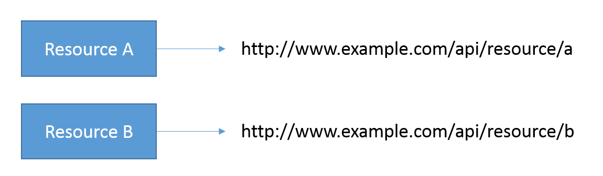Uniform Interface
Resources are abstracted from the data source and can be manipulated before being sent to a client

Uniform Interface
Hypermedia As The Engine Of Application State (HATEOAS)
Stateless

- Self-contained and independent requests
- Improves scalability
- Allows for parallel processing of requests
- Lets resources be viewed in isolation
Client-Server
- Decoupled clients and servers
- Increases portability
- Easier to scale
Layered System

- Endpoints can be the terminus or an intermediary service
- Allows for load balancing and intermediate security enforcers
Why choose REST?
- Easy to implement
- Usable across many different platforms and languages

Why REST and Grails?
- Many helpful defaults
- Ease of development
- Shorter development time
Getting Started
New in Grails 3
- Based on Spring Boot
- Switched to Gradle for build system
- Major structural changes
- Configuration
- Scripts
Scope
De-coupled server and client means:

Getting Started
Resource Transformation
import grails.rest.Resource
@Resource(uri='/gr8ladies')
class Gr8Lady {
String first
String last
}Getting Started
URL mappings
URLmappings.groovy
"/gr8ladies"(resources:"gr8lady")Or
"/gr8ladies"(resources:"gr8lady") {
"/chapters"(controller:"chapter", method:"GET")
}Getting Started
Controller Responses
class CompanyController {
def index() {
respond company
}
}uses either the accept header or file extension
10 Ways To Improve A RESTful API
with Grails Examples
1. Use Appropriate HTTP Status Codes
HTTP Status Codes
Learn the correct status codes for different errors
| Code | Description |
|---|---|
| 2XX | Successful |
| 200 | OK |
| 4XX | Client Error |
| 400 | Bad Request |
| 403 | Forbidden |
| 404 | Not Found |
| 5XX | Server Errors |
| 500 | Internal Server Error |
| 502 | Bad Gateway |
Presenting:
HTTP Status Pets & Fosters
Based on HTTP Status Dogs and HTTP Status Cats
2xx
| 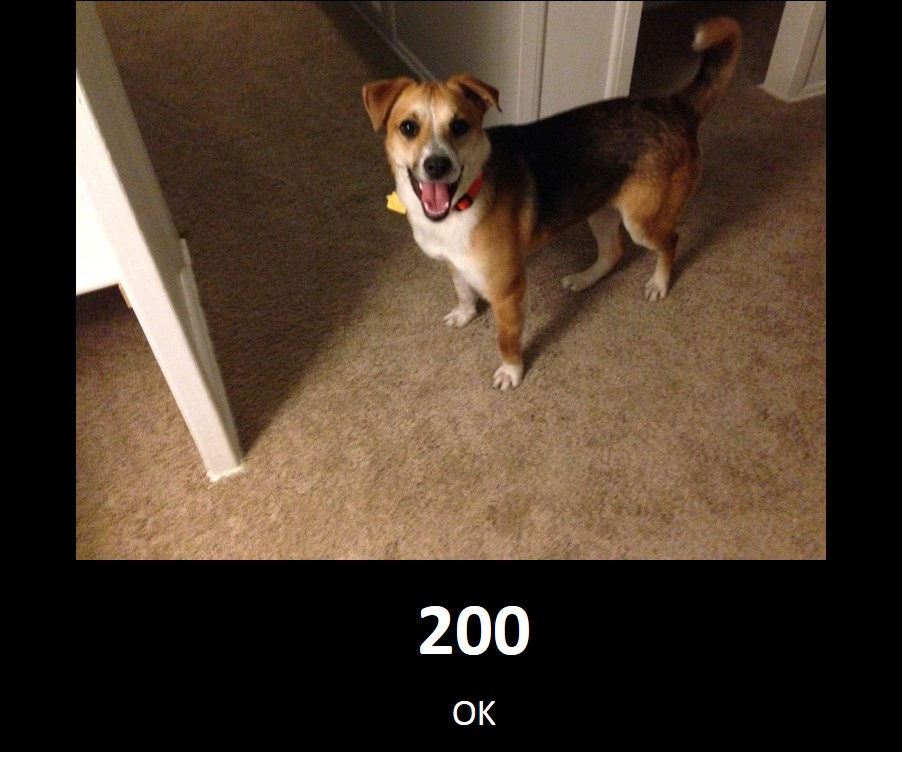 |  |
 |
 |
3xx
| 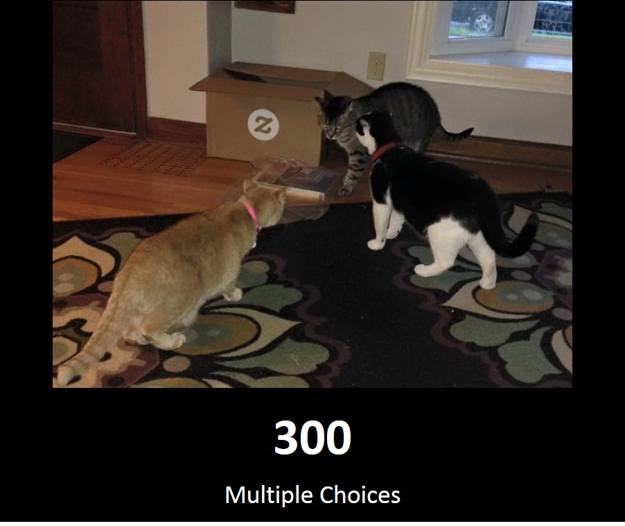 | 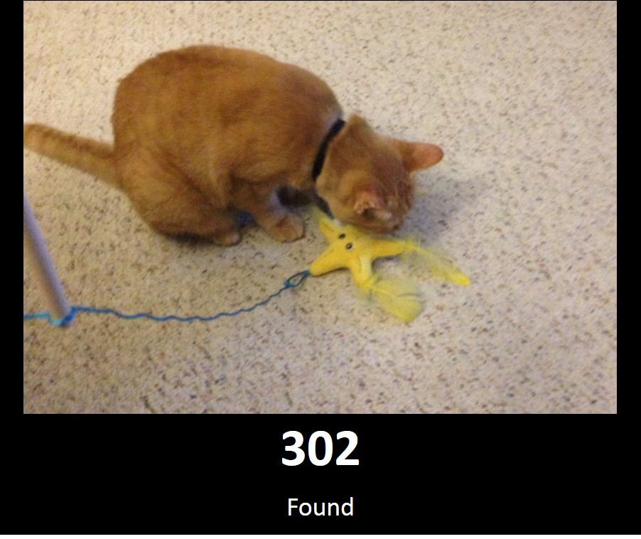 |  |
 |
4xx
| 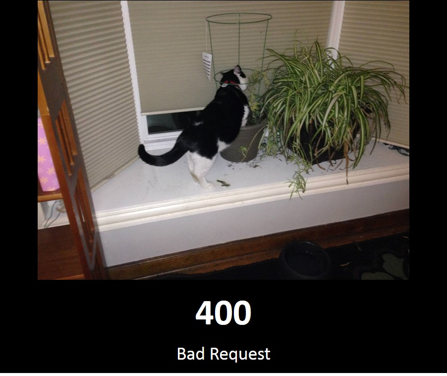 |  |
 |
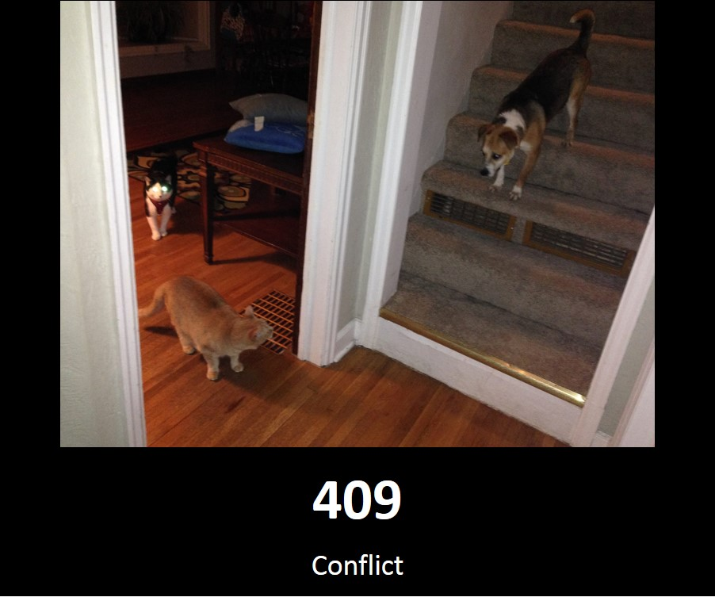 |
| 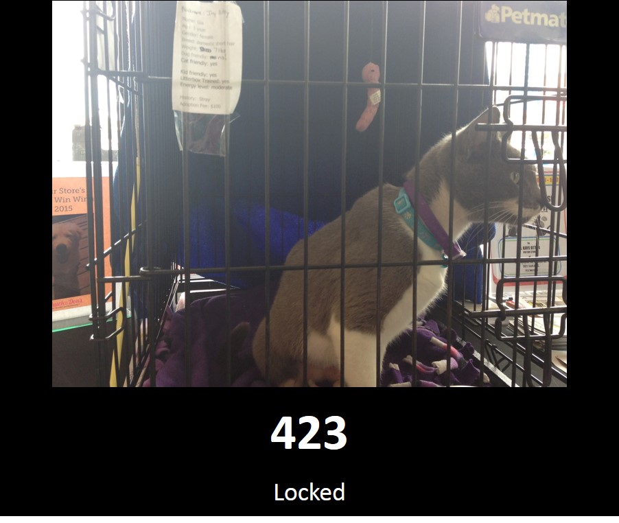 |  |
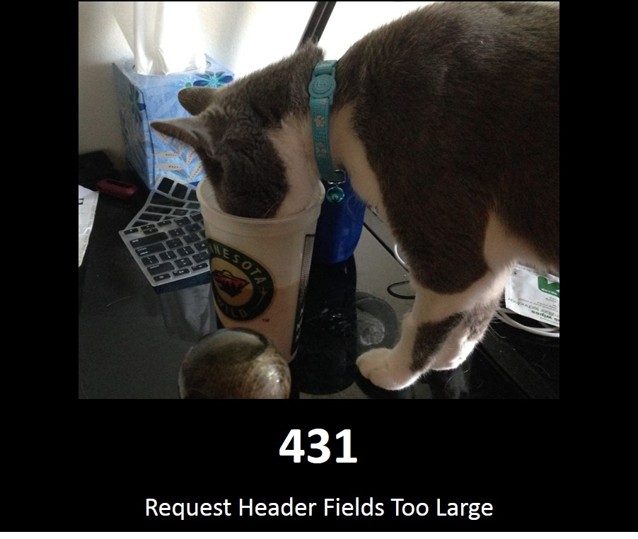 |  |
5xx
| 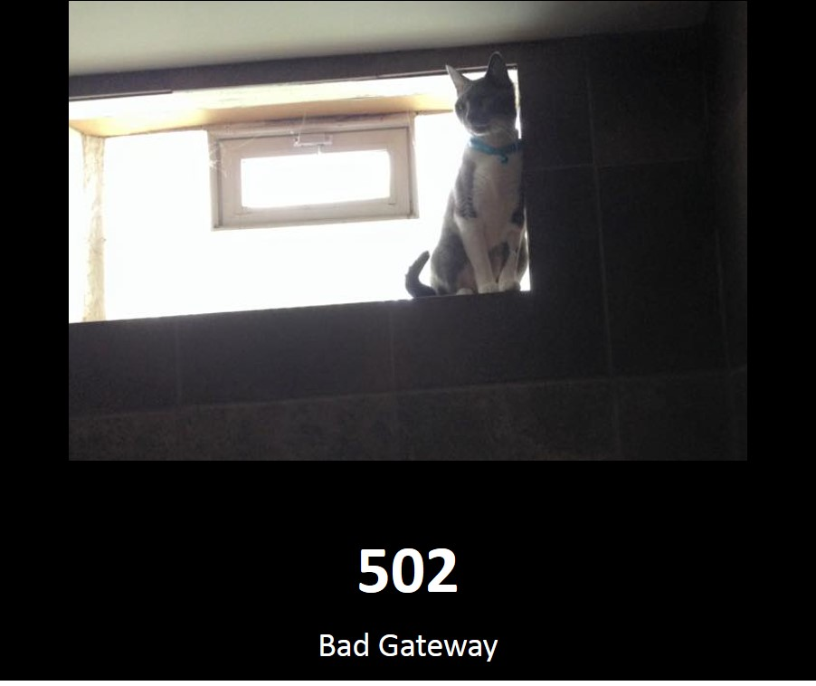 |  |
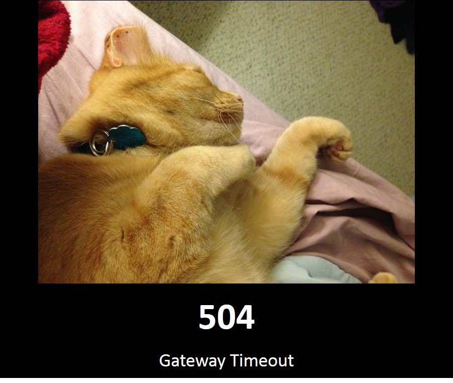 | 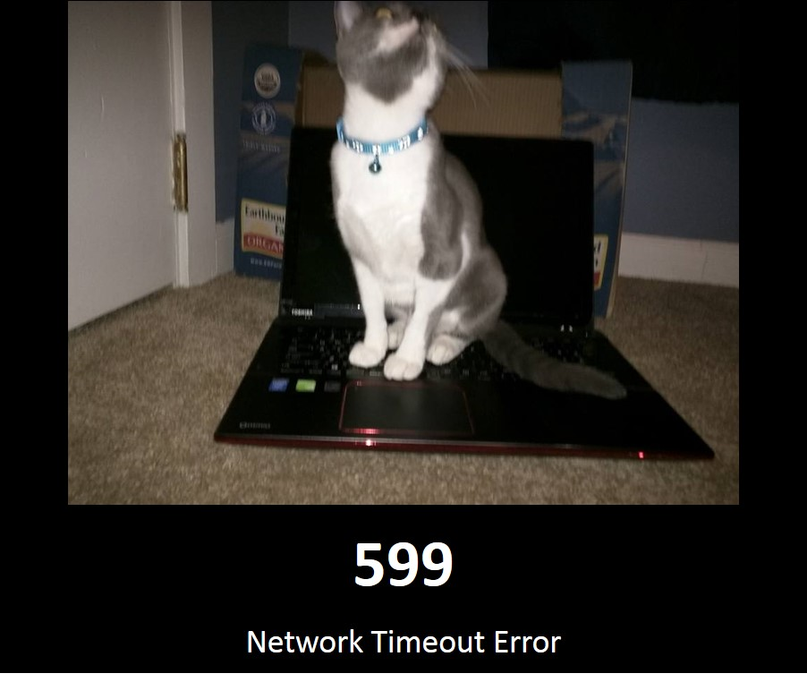 |
Do's and Dont's
- 200 is ok ... but not for everything
- DON'T expect the end user to parse through the message for an error
- DO Use an appropriate HTTP Error Response
HTTP Status Codes in Grails
Many of the cases are handled by Grails or the server(i.e. 5XXs)
HTTP Status Codes in Grails
if(someCondition) {
render status: 4XX
}2. Use the right HTTP verbs
- GET to retrieve a resource
- POST to create a new resource
- PUT to update an existing resource
- DELETE to remove an existing resource
HTTP verbs in Grails
Resource Annotation
Handled by Default! :)
HTTP verbs in Grails
On each Controller
class Gr8LadyController {
static allowedMethods = [list: "GET", save: "POST", update: "PUT"]
}HTTP verbs in Grails
URL Mappings
"/gr8ladies"(resource: "gr8lady", method: "GET")3. Name Endpoints Consistently and Appropriately
List
http://example.com/resource
Show
http://example.com/resource/{id}
Endpoints
http://example.com/resource/{id}- NOT
http://example.com/resource?id=abc123 - NOT
http://example.com/resource/{id}/?action=delete - NOT
http://example.com/resource/add
4. Style Consistently
casing
/resources
NOT
/ReSoUrCeS
Consistent URI style
Try Either:
/multiWordResources
Or:
/multi-word-resources
And stick to it. Don't Mix and Match!
Consistent Style
Resource Names
plural nouns preferred
http://example.com/users
vs
http://example.com/user
5. Provide Search Functionality
- Lookup based on values
http://example.com/resource?fieldName=value
6. Support Multiple Media Types (JSON, XML)
- XML and JSON are most common
Multiple Media Types (JSON, XML) in Grails
- XML by default
-
By Parameter
http://example.com/resource.json
Multiple Media Types (JSON, XML) in Grails
Available formats
grails:
mime:
types:
...
json: ['application/json', 'text/json'],
...
xml: ['text/xml', 'application/xml']Multiple Media Types (JSON, XML) in Grails
By Resource
import grails.rest.Resource
@Resource(uri='/gr8ladies', formats=['json'])
class Gr8Lady {
...
}Requesting another type returns a 406 (Not Acceptable)
Multiple Media Types (JSON, XML) in Grails
By RestfulController
class Gr8LadyController extends RestfulController {
static responseFormats = ['json', 'xml']
}Remember to add any response formats for versioned mime types
7. Provide Custom Response Formats
- Filter from default responses
- Provide different responses per version
- Provide response formats based on security
Custom Response Formats in Grails
Object Marshallers
grails-app/init/Bootstrap.groovy
import grails.converters.JSON
class Bootstrap {
def init = { servletContext ->
JSON.registerObjectMarshaller(Gr8Lady) {
def returnArray = [:]
returnArray['firstName'] = it.first
returnArray['lastName'] = it.last
returnArray['chapter'] = it.chapter?.name
return returnArray
}
}
}Usage
render gr8lady as JSONCustom Response Formats in Grails
Object Marshallers
grails-app/conf/spring/resources.groovy
import grails.converters.JSON
import org.gr8ladies.ChapterMarshaller
beans = {
JSON.registerObjectMarshaller(new ChapterMarshaller())
}Custom Response Formats in Grails
Object Marshallers
class Gr8LadyMarshaller implements ObjectMarshaller<JSON>{
public boolean supports(Object object) {
return object instanceof Gr8Lady
}
public void marshalObject(Object object, XML converter) {
Gr8Lady gr8lady = (Gr8Lady)object
converter.chars gr8lady.displayName
}
}8. Use Hypermedia As The Engine Of Application State (HATEOAS)*
link to the resource and navigation
{
"_links": {
"self": { "href": "/gr8ladies" },
"next": [
{ "href": "/gr8ladies?page=2" }
]
}
}HATEOAS in Grails
- JSON
- Hypertext Application Language (HAL)
grails-app/conf/spring/resources.groovy
import grails.rest.render.hal.*
beans = {
halGr8LadyRenderer(HalJsonRenderer, org.gr8ladies.Gr8Lady)
}HATEOAS in Grails
Usage: Content Negotiation
curl -i -H "Accept: application/hal+json" http://localhost:8080/gr8ladies/1
HTTP/1.1 200 OK
Server: Apache-Coyote/1.1
Content-Type: application/hal+json;charset=ISO-8859-1
{
"_links": {
"self": {
"href": "http://localhost:8080/gr8ladies/1",
"hreflang": "en",
"type": "application/hal+json"
}
},
"name": "Jenn Strater"
}9. Or Use Pagination*
Parameters
http://example.com/resource?offset=0&max=10
def list() {
List gr8ladies = Gr8Lady.list(max: params.max, offset: params.offset)
respond [results: gr8ladies, max: params.max, offset: params.offset]
}10. And Versioning*
- URI
http://example.com/v1/resource/{id} - Custom Header
-
GET https://example.com/resource version: 2.0 - Content Type
-
GET https://example.com/resource Accept: application/vnd.example.v2+json
Versioning in Grails
@Resource(uri='/gr8ladies/v1')@Resource(uri='/gr8ladies/v2')"/gr8ladies"(version:'1.0', resources:"gr8lady", namespace: 'v1')"/gr8ladies"(version:'2.0', resources:"gr8lady", namespace: 'v2')
- URI
- Accept Header
Read-only Mode
- for public APIs
- or as a security measure
Read-only Mode in Grails
@Resource(uri="/gr8ladies", readOnly=true)
class Gr8Lady {
String first
...
}Example
Related Plugins for other Grails versions
Spring Security REST Plugin
Token based Authentication based on Spring-Security

Last Updated May 2015
Greach 2014
VideoRestful API Plugin
For more complicated APIs
Last Updated November 2014
Rest Renderer
For greater control over data output
Last Updated February 2014
Conclusions
- REST is an architecture style, not a standard
- There are many ways to implement REST
- Grails makes implementing REST easy!
- Don't reinvent the wheel, use standard practices.
Questions?

jenn@gr8ladies.org
References
- Kay, Russell. "Representational State Transfer (REST)".
Computerworld . 6 Aug 2007. Web - Fischer, Ludovico. "A Beginner’s Guide to HTTP and REST".
Tuts+ . 9 Jan 2013. Web - Fielding, Roy.
Architectural Styles and the Design of Network-based Software Architectures . 2000.